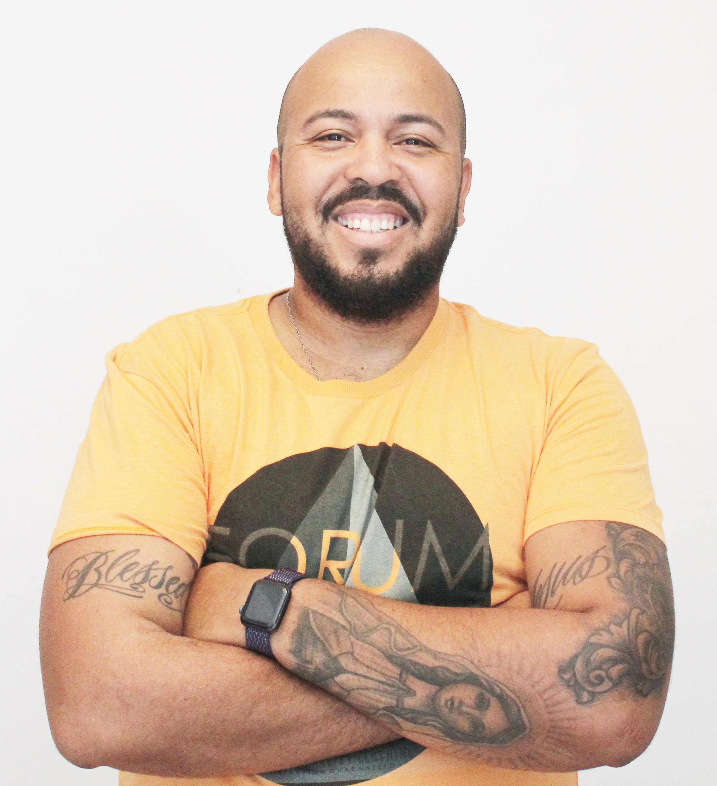

Sobre o Autor


Meu nome é Milton Lima!
Sou profissional da área de TI a mais de 12 anos atuando com infraestrutura e gestão de TI, possuos forte background em sustentação de infra. Atualmente tenho me dedicado ao estudo de tecnologias voltadas para Cloud, HA e Iac ( Kubernetes, Rancher, Docker, Terraform, Ansible, Packer e Vault) e fortalecendo meu conhecimento em de Desenvolvimento de software (Front-end & Back-end) para atuar como SRE.